Vídeo sobre cómo instalar el servidor de Bingo Intelligence
El siguiente vídeo muestra el proceso completo de instalación de Bingo Intelligence.
ADVERTENCIA: El vídeo corresponde a una versión de Bingo Intelligence de marzo del 2010. Pueden existir pequeñas diferencias entre lo mostrado en el vídeo y el proceso real de instalación.
A continuación se explica con detalle todo el proceso de instalación
Conceptos previos
La plataforma Bingo Intelligence está formada por los siguientes componentes:
- Bingo Análisis (que incluye Bingo Planning)
- Bingo Excel
- Servidor Bingo
- Repositorio Bingo
- Administrador de Bingo Intelligence
Antes de empezar, conviene estar familiarizado con la función de cada componente dentro de la plataforma. Para ello, se puede consultar el artículo de ayuda llamado “¿Qué es Bingo Intelligence?”.
En los siguientes apartados se describen, en este orden, los pasos necesarios para instalar la plataforma completa:
- Preparación previa
- Instalar el Administrador de Bingo Intelligence
- Instalar el servidor Bingo
- Crear el repositorio Bingo
- Verificar las comunicaciones y la correcta instalación de:
- Bingo Análisis
- Bingo Excel
La instalación es sencilla y puede realizarse en pocos minutos. De todos modos, es necesario disponer de unos conocimientos mínimos de administración de un servidor Windows (y de una base de datos de SQL Server).
Preparación previa
Antes de instalar la plataforma de Bingo Intelligence es necesario asegurarse que el servidor donde se instalará cumple los requerimientos mínimos. En concreto, conviene verificar que:
- Que el servidor IIS está instalado y funcionando, para ello suele ser suficiente verificar que el servidor sirve una página al acceder a http://localhost
- Que el .NET Framework 4 de Microsoft está instalado. Esto puede comprobarse desde el “Panel de control”, en el apartado “Instalar o desinstalar programas”.
- Que la base de datos SQL Server donde se creará el repositorio de Bingo Intelligence está activa y accesible. Para ello, se debe abrir el “SQL Server Management Studio” y establecer una conexión con dicho servidor.
Evidentemente, se recomienda que el servidor esté “limpio”, con suficiente espacio en disco para el buen funcionamiento de Windows, y con el menor número de aplicaciones y/o servicios instalados.
Bingo Intelligence puede compartir servidor con otras aplicaciones aunque, evidentemente, el rendimiento siempre será mejor si se dispone de un servidor dedicado.
Por razones de seguridad, también se recomienda ejecutar “Windows Update” hasta que el sistema indique que “No hay más actualizaciones disponibles”.
Instalación del Administrador de Bingo Intelligence
Para empezar la instalación se debe instalar el “Administrador de Bingo Intelligence”
El “Administrador de Bingo Intelligence” es la aplicación que utiliza el administrador del sistema para instalar, configurar y actualizar el resto de la plataforma. Con esta aplicación, se instala el servidor, se crea el repositorio y se publican los links de instalación de Bingo Análisis y Bingo Excel.
También se utiliza este administrador para configurar el tipo de autentificación y para instalar nuevas versiones de la plataforma de Bingo Intelligence cuando están disponibles.
En general, se recomienda instalar el Administrador en el mismo ordenador donde se instalará el servidor de Bingo.
Para proceder a la instalación hacen falta dos cosas:
- El programa de setup (que es un fichero llamado BingoAdminSetup.msi).
- El número de licencia (con el formato XXXX-XXXX-XXXX).
El “setup” habitualmente lo entrega el comercial de Bingo Intelligence al cliente que quiere instalar o probar el producto. Junto al setup se proporciona el número de licencia que permite la instalación a dicha empresa.
Al ejecutar el setup, se iniciará el “Asistente de instalación” del “Administrador de Bingo Intelligence”:
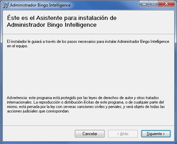
Al pulsar el botón “Siguiente”, aparece una pantalla donde se puede elegir la ubicación donde se instalará la aplicación:
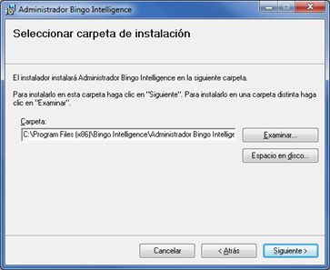
Al pulsar “Siguiente”, se inicia el proceso de instalación, y a los pocos segundos debe aparecer un mensaje informando que la instalación ha finalizado correctamente:
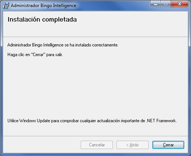
Una vez instalado, ya se puede ejecutar el programa “Administrador de Bingo Intelligence”. La aplicación se encontrará en “Inicio/Todos los programas/Bingo Intelligence”.
Al iniciar el administrador por primera vez se solicita el número de licencia. Deberemos escribir el “número de licencia” y hacer clic en el botón “Aceptar”.
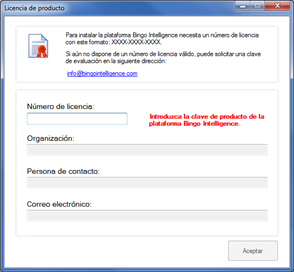
Una vez validado el número de licencia, se abrirá el Administrador. El Administrador es una aplicación muy sencilla que muestra un diagrama con el estado actual de la instalación. Inicialmente, el diagrama tendrá esta apariencia:
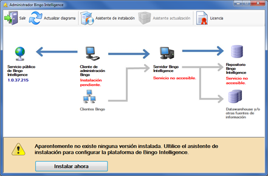
Este diagrama indica cuál es la versión más actual disponible (en azul, a la izquierda), cuál es la versión que tenemos instalada en nuestra organización, y cuál es el estado del servicio y del repositorio. De entrada no tenemos nada instalado, por lo que debemos hacer clic en “Instalar ahora” para proceder a la instalación.
Instalación del servidor de Bingo Intelligence
Al hacer clic en “Instalar ahora”, se abre el “Asistente de instalación del servidor”:
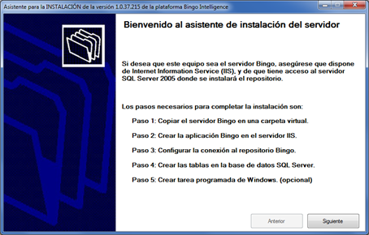
En el primer paso del asistente se debe indicar la carpeta física donde se copiará el “servicio web”. También se debe indicar la URL que utilizarán los usuarios para acceder a la plataforma. Esta URL se puede cambiar posteriormente.
En esta ubicación también se publicarán los links a los programas de instalación de Bingo Análisis y Bingo Excel que utilizarán los usuarios.
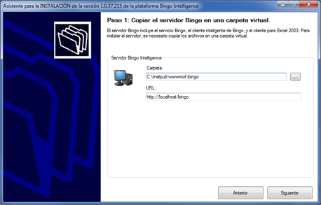
Al hacer clic en “Siguiente”, se copian todos los archivos en la ubicación seleccionada, y aparece una pantalla donde se puede verificar si la aplicación está accesible y si el servidor IIS está correctamente configurado.
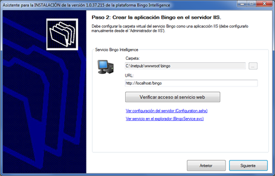
Inicialmente, aparecerá un mensaje de error al verificar el acceso al servicio web. Es normal. Se debe configurar el servidor IIS. Los pasos concretos para configurar el IIS pueden variar ligeramente en función del sistema operativo y de la versión de IIS que se esté utilizando. En cualquier caso, se deben aplicar las siguientes configuraciones:
- Se tiene que convertir la carpeta “bingo” donde se han copiado los archivos en una “Aplicación IIS”.
- Se tiene que definir que esta aplicación utiliza ASP.NET v4
Una vez realizadas estas configuraciones, debe aparecer el siguiente mensaje al “verificar el acceso al servicio web”:
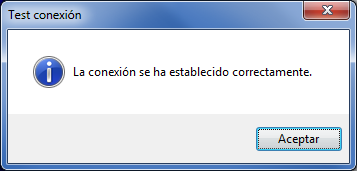
Ocasionalmente, las configuraciones anteriores no serán suficientes, y obtendremos un mensaje de error. Este problema puede ocurrir en función del orden en que se haya instalado el IIS y el Framework .NET, o en el caso que otras aplicaciones hayan modificado la configuración predeterminada de Windows. Para solucionar la incidencia, debemos registrar de nuevo el ASP.NET y/o los componentes de WCF.
Para registrar ASP.NET, se debe ejecutar el siguiente comando:
C:\Windows\Microsoft.NET\Framework\v4.0.30319\aspnet_regiis.exe –i
Excepcionalmente, también puede ser necesario reinstalar los componentes de WCF
C:\Windows\Microsoft.NET\Framework\v4.0.30319\ServiceModelReg.exe –ia
Si aun así no se consigue verificar la conexión con el servicio web, puede obtenerse información adicional en el artículo donde se explican los problemas de instalación más habituales.
Al resolver todas las posibles incidencias debe aparecer, finalmente, el mensaje advirtiendo que está todo correcto:

Una vez instalado el servicio web, se puede proceder a instalar el repositorio. Para ello, se debe pulsar el botón “Siguiente”.
Instalación del repositorio
Una vez instalado el servicio web, aparecerá esta pantalla:
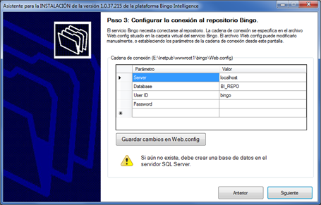
En este formulario, se debe crear la conexión con la base de datos donde residirá el repositorio. Para ello, debemos indicar el nombre del servidor, el nombre de la base de datos, y el nombre y el password del usuario que se conectará.
La base de datos se tiene que crear manualmente desde el SQL Server Management Studio. También se debe crear el usuario que se conectará y éste debe tener permisos de propietario de la base de datos. Es suficiente crear la base de datos vacía con las opciones predeterminadas de SQL Server, aunque también se puede aplicar con cualquier otra configuración que se desee (indicando otra ubicación para los archivos de base de datos, o un modo de recuperación específico, por ejemplo)...
El servidor web será el único componente que se conectará al repositorio por lo que si la base de datos está en la misma máquina se puede referenciar como “localhost”, aunque se recomienda utilizar el nombre de la máquina.
El nombre de la base de datos que propone el “Asistente de instalación” es BI_REPO, aunque se puede indicar cualquier otro nombre que se desee.
Por defecto, el asistente solicita un nombre y un password, aunque también se puede configurar manualmente la conexión para que utilice la autentificación integrada de Windows. En este caso, el usuario que se conectará es el que ejecuta ASP.NET, por lo que deberemos establecer los permisos necesarios.
Una vez indicados los parámetros de conexión, se debe pulsar el botón “Guardar cambios” y esta configuración quedará guardada en el fichero de configuración del servicio web (Web.config).
Al pulsar el botón “Siguiente” se verificará la conexión. Si no es posible conectar, aparecerá un mensaje indicando cual es problema. Si la conexión es correcta, aparecerá la siguiente pantalla al cabo de pocos segundos:
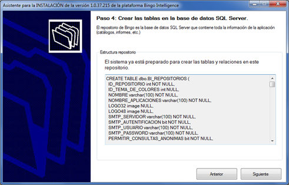
Este formulario muestra el script SQL que se ejecutará para crear el repositorio. No es necesario hacer nada; simplemente, se debe hacer clic en el botón “Siguiente”, y el sistema procederá a crear todas las tablas del repositorio de Bingo Intelligence.
IMPORTANTE: Esta base de datos contendrá toda la configuración de la plataforma Bingo Intelligence, incluyendo toda la configuración de usuarios, todos los catálogos, y todas las aplicaciones e informes de los usuarios. Para migrar el sistema a otro servidor, o para recuperar la instalación después de un “desastre”, sólo es necesario disponer de una copia actualizada de esta base de datos. El administrador del sistema es responsable de hacer copias de seguridad de esta base de datos de manera periódica, y de establecer los mecanismos de recuperación oportunos.
Pasos finales del asistente de instalación
Una vez creado el repositorio, aparecerá la siguiente pantalla:
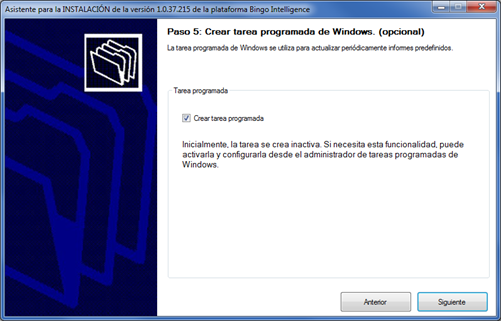
En este formulario nos solicita permiso para crear una tarea programada. Esta tarea sirve para ejecutar los informes de Bingo Excel que programan los usuarios (desde Bingo Excel, los usuarios tienen la opción de definir la periodicidad, y los destinatarios de los informes generados).
Inicialmente, la tarea programada está inactiva. En el caso de que se desee hacer uso de esta funcionalidad, se debe activar la tarea desde el administrador de tareas programadas de Windows.
Al hacer clic en el botón “Siguiente”, aparecerá un mensaje informando que la instalación ha terminado:
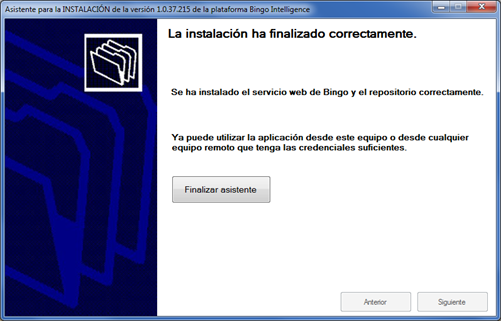
Al cerrar el asistente, se actualizará el diagrama de la instalación, y debe tener esta apariencia:
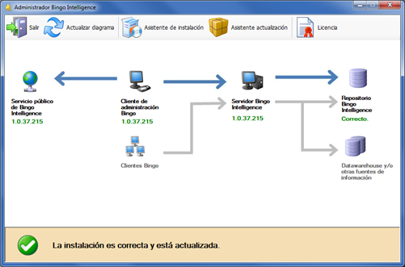
En este momento, la instalación del servidor ya está finalizada. Se ha instalado el servicio web y el repositorio de Bingo. También se han copiado los ficheros que utilizarán los usuarios para instalar los clientes de Bingo Análisis y Bingo Excel.
IMPORTANTE: Inicialmente el repositorio de Bingo Intelligence no tiene ningún usuario creado. El primer usuario que se conecte al servidor se creará automáticamente como usuario administrador. Por lo tanto, antes de compartir el enlace con otros usuarios o técnicos, es importante que el administrador se conecte y verifique que la plataforma funciona correctamente. Posteriormente, se podrán crear más usuarios, más administradores, o cambiar los existentes.
Verificación de la instalación
Para verificar la instalación, se debe acceder a la página de entrada de la plataforma. Bingo Análisis y Bingo Excel utilizan la tecnología de implementación denominada ClickOnce. Con esta tecnología los usuarios pueden instalarse las aplicaciones de manera muy sencilla (con un solo clic).
Se pueden instalar los clientes de Bingo Análisis y Bingo Excel en el propio servidor. Para realizar la instalación de los clientes, se debe utilizar el navegador Internet Explorer. Lamentablemente, no es posible por el momento instalar aplicaciones ClickOnce desde Chrome o Firefox.
Si se han mantenido los parámetros predeterminados, la ubicación de la página de entrada de la plataforma es: http://localhost/bingo
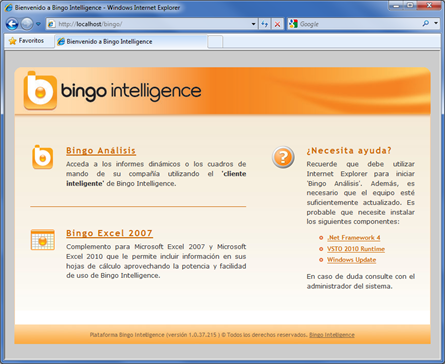
Para instalar el cliente de Bingo Análisis, se debe hacer clic en el enlace de “Bingo Análisis”. Aparecerá una advertencia de seguridad que informa que una aplicación de Bingo Intelligence S.L. está a punto de instalarse:
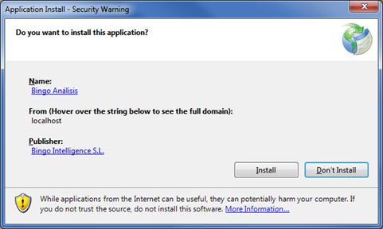
Al hacer clic en el botón “Install”, se instalará Bingo Análisis y aparecerá el siguiente diálogo de conexión:
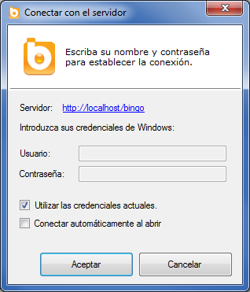
Para conectarse, se puede utilizar el usuario que actualmente haya iniciado sesión en Windows, o se puede establecer las credenciales de otro usuario. El primer usuario que se conecte se crea automáticamente con permisos de administración.
Una vez conectado, aparecerá la aplicación Bingo Análisis, verificándose de este modo que la instalación se ha efectuado correctamente.
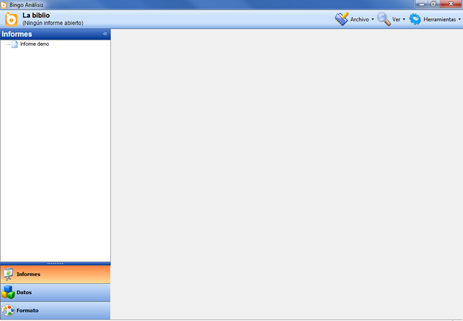
Siguientes pasos
Antes de compartir el enlace de instalación con el resto de técnicos y usuarios conviene realizar algunas acciones adicionales:
- Instalar la aplicación de ejemplo
- Dar de alta a los usuarios del sistema
- Incluir el link de instalación en la intranet corporativa
Instalar la aplicación de ejemplo
Inicialmente, el repositorio tiene un catálogo y una aplicación de ejemplo. Sin embargo, la base de datos de ejemplo no está instalada en el servidor. Por este motivo, es normal que aparezca un error al intentar abrir el informe predeterminado. Para poder navegar por la aplicación LA BIBLIO, es necesario instalar la base de datos BI_BIBLIO, y se deben definir los parámetros de conexión a esta base de datos de ejemplo. En el artículo sobre cómo instalar la aplicación de ejemplo se incluye información más detallada.
Dar de alta a los usuarios del sistema
El primer usuario que se conecta al servidor se crea como usuario administrador. Éste es el único usuario que se crea de manera automática. Para que puedan acceder otros usuarios, es necesario dar de alta los usuarios y los grupos de usuarios que sea conveniente.
Incluir el link de instalación en la intranet corporativa
Por defecto, los técnicos y el resto de usuarios pueden instalar la aplicación en sus ordenadores siguiendo los links que muestra Bingo Intelligence en la página de entrada:
- http://MI-SERVIDOR/bingo/bingo.application (Para instalar Bingo Análisis)
- http://MI-SERVIDOR/bingo/Bingo.Excel2007.vsto (Para instalar Bingo Excel)
Esta pantalla puede modificarse o eliminarse completamente. Para que los usuarios puedan instalárselo, simplemente es necesario copiar estos enlaces en la intranet corporativa o en la página que la organización considere oportuno.
Desde el administrador de IIS es posible modificar la URL del servidor. Por ejemplo, es posible configurar la plataforma para que sea accesible desde direcciones como éstas:
- http://bingo.mi-organizacion.com
- http://intranet.mi-organizacion.com/bingo
- https://bingo.mi-organizacion.com
- https://intranet.mi-organizacion.com/bingo
La comunicaciones entre los clientes y el servidor se realizan utilizando los protocolos estándar web (http/https). Por lo tanto, es posible acceder a la aplicación indistintamente desde dentro de la oficina o desde una ubicación remota. Para ello, sólo es necesario configurar convenientemente las comunicaciones del servidor (firewalls, etc.).